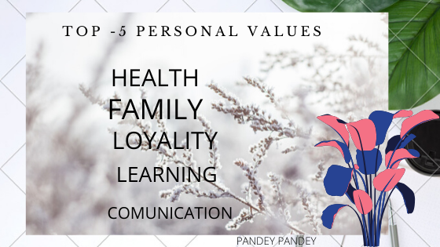

values are the individual beliefs that people hold and the things that people deeply feel are important in their lives. These beliefs are the underlying motivations for how people act and behave. We can also define values as the preferences in your life. We create them throughout our lives, starting in early childhood. Values vary between individuals, but there are common and shared values that occur within a family, culture, group or country. One example of a shared value is ‘patriotism’ common within a country. Many family members share similar values because of their upbringing. Everyone has values, some people just are more aware of what their values are than others. Being aware of what your most important values are — your core values — provides a valuable guide for living a life that feels meaningful and can greatly help with decision making. Making decisions that go against one of your core values will cause a sense of “distress” or “discomfort”, or feelings of guilt or even a loss. Following one’s core values brings meaning and purpose. They uphold your sense of personal responsibility, giving you a sense of “self-worth.” Your values will evolve over your lifetime, as your circumstances change, however many do remain constant. Values form a vital part of your personality as they can, and should, determine how you live your life. Discovering your own values, these things important to you in life, is a process of self-discovery that everyone ideally should take. You will feel better when you live a life in alignment with your values. With so much emphasis placed on happiness in our society, we each need to learn about what our deep core values are — to enable ourselves to live a full and meaningful life. Once you determine what your core values are and have prioritized them, an important part of the process, you can use your values to guide your life. Author Stephen R. Covey states:
“People can’t live with change if there’s not a changeless core inside them. The key to the ability to change is a changeless sense of who you are, what you are about and what you value.” Spend your time and energy on things that nurture your values. Doing so will ensure that you experience a sense of meaning and more satisfaction with what you are doing and how you spend your time. Realistically, not every activity you have to do will or even can be a match with your values. However, to live a more fulfilling life, try to spend most of your time doing things congruent with your value system. If you don’t find meaning in an activity, perhaps none of your values are being met, or worse, are being violated or disregarded. You need to pay attention to these activities and your feelings. Knowing that something is violating a value is a massive hint from the universe or your inner knowing that you need to change your life. If you can’t change the activity itself, at least not right away, such as your stressful job, then try to find some aspect of your job that can somehow align with a value you hold. For example, if connection is a core value, you can try to reach out more to co-workers or customers and find that moment of human connection, even if it’s only fleeting. Doing these actions consciously can reduce your job dissatisfaction and even provide a moment of meaning, for both of you. This can be a game changer and greatly increase your life satisfaction. So what are your values? How do you figure that out? My next article will be about how to determine your core values, an important personal assignment for a healthier life. I’ll leave you with some examples of core values. There are too many to list here. Search the internet for a list of core values and you will find many to browse through. Become familiar with what values are, which words describe the values and you will have made a head start into the inner dimension of self-discovery.
This topic is about self love , every one should know there own personal value. When you live your life by your values, you feel amazing about yourself and are more focused on doing the things that are important to you. actually we should know about what is personal value ? personal value is a general expression of what is most important to you not the things that other think what important for you. WHY IT IS GOOD TO KNOW YOUR PERSONAL VALUE? The answer is two fold. First you get clarity & build your conscious knowledge of ones own character and feeling by identifying your value. Secondary knowing your highest value can act like a guide for you.
knowing your personal core value is essential to living your most authentic & having a definite aim or plan to your beautiful life. actually its make fabulous decision easier .health- according to WHO ( World Health Organization ) Better health is central to human happiness & well-being.it also makes an important contribution to economic progress ,as healthy population live longer ,are more productive and save more. So, in my top 5 personal value list health is most important because in my life journey I was suffering a lot of things due to unhealthy body.so health is always my first priority .if you are healthy you can do anything you can achieve any thing.it is real health is wealth.so take care of your health then only you can create wealth also. family- family is a great part of all human life .every person is incomplete without the family ,for me my friends is also a family .so how’s this possible !one of my favorite quotes “there are friends ,there is a family & then there are friends that become family” .I’m in love with this qoutes.so my dear viewers family isn’t always blood. it’s the people in your life who want you in theirs , the ones who accept you for what you are .the ones who would do anything to see you happy smile & who love you no matter what is happining with you .
family- family is a great part of all human life .every person is incomplete without the family ,for me my friends is also a family .so how’s this possible !one of my favorite quotes “there are friends ,there is a family & then there are friends that become family” .I’m in love with this qoutes.so my dear viewers family isn’t always blood. it’s the people in your life who want you in theirs , the ones who accept you for what you are .the ones who would do anything to see you happy smile & who love you no matter what is happining with you . #Loyalty- loyalty is everything for living a happy life .a true loyal person is always sincere. if you are faithful & devoted to something or someone, you are loyal .the loyal person supports always ,just be loyal with everyone that’s give you happiness.
#Learning -learning is a prosses that’s end when life ends.it is a prosses that never stop so you learn & develop your own new skills that will help you to achieve something big in life.so keep learning .simple as that learners are earners.
#communication- it is no doubt communication plays a great role in human life.it is not only help to facilitate the process of sharing information & knowledge ,but also help people to develop relationship with others .everyday we communicate with a lots of people including ours family ,friends ,colleagues, or even the stranger.so we should learn how to communicate effectively to make our live better.